A sibling to CREB, built for serious money
CREB had started to compound. The next question from Compound was about the people it couldn't serve well: accredited investors with $10,000 or more to commit, who expected a wealth product to feel like one. Compound Gold Bonds was the answer - gold-backed bonds for that audience, with IRA investing, accreditation, and nominee management built in.
I designed it as a sibling, not an extension: new audience, new brand, a design system built from scratch, so CGB could stand on its own while still feeling part of the Compound family. The hard part was never the asset. It was the tone - premium and trustworthy enough for large sums, without becoming the kind of opaque, jargon-heavy wealth tool that quietly scares people off.

Premium expectations, fintech clarity
Accredited investors bring scrutiny, and a $10,000 minimum raises the stakes of every screen. The product had to signal it could be trusted with serious money while staying as clear and legible as a consumer app. That was the needle to thread on every flow: considered and exact, never ornamental; premium, never opaque.
The same trust problem, higher up the ladder
I didn't restart research from zero. CGB inherited it from CREB, where months of user interviews, support transcripts, and funnel review had already surfaced the core insight: people weren't confused about what the product was, they were unsure whether they could trust it with their money. That held for CGB too, only the bar for "trustworthy" rose with the balance at risk.
The competitive read carried over as well. Traditional REITs and private-wealth tools owned the asset class but hid it behind high minimums and slow, opaque interfaces; neobanks had the polish and trust signals but no real-asset yield; robo-advisors had the onboarding finesse but abstracted the investment away. CGB's opening was the one CREB found, moved up-market: the clarity of a modern app applied to a serious, gold-backed asset, without the friction incumbents treat as a feature.
The full research and competitive breakdown lives in the CREB case study →
Refining the mark before the screens
A wealth product is judged before it's used, and the wordmark sets the tone. Before designing a single screen, I refined the Compound | Gold Bonds lockup: tightening the spacing, balancing the weight between "Compound" and "Gold Bonds," and correcting the optical alignment of the divider so the mark reads as deliberate at any size. Small moves, but they're the first trust signal a user ever receives.
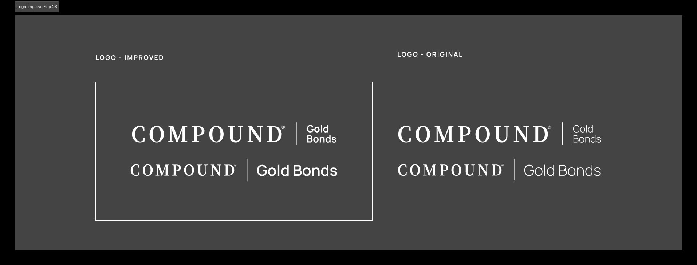
Premium is restraint, not decoration
CGB needed its own system, built fresh, and the thesis was a single line: premium is restraint, not decoration. Wealth users read confidence in calm, exact surfaces, not in ornament. So the system leans on generous space, a quiet navy-and-gold palette, and Manrope for a tone that signals care without shouting.
It's a complete kit - color, type, iconography, buttons, forms, cards, modals, and states - but the components that matter most are the ones that carry trust: KPI and rate cards that state holdings and APY plainly, a "secure & trusted" pattern, confirmation modals that restate exactly what a large investment commits to, and a progress stepper that turns KYC, bank connection, accreditation, and IRA setup into visible, finite steps instead of open-ended friction.
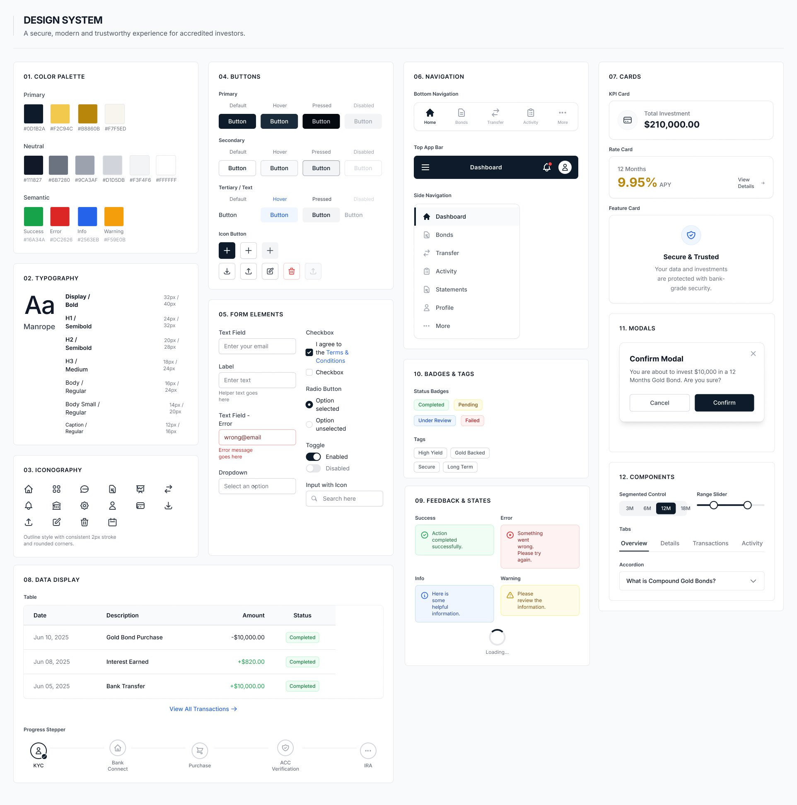
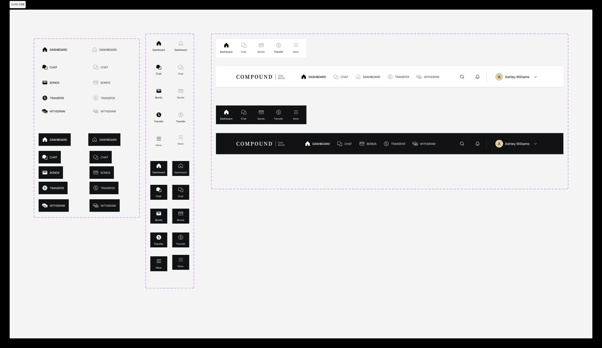
Every module and every route, mapped first
As with CREB, I mapped the whole product before styling anything. A sitemap laid out every module - onboarding, dashboard, bonds, transfer and withdraw, IRA, accreditation, profile, and the global states most products forget - so the system was designed as a whole rather than screen by screen.
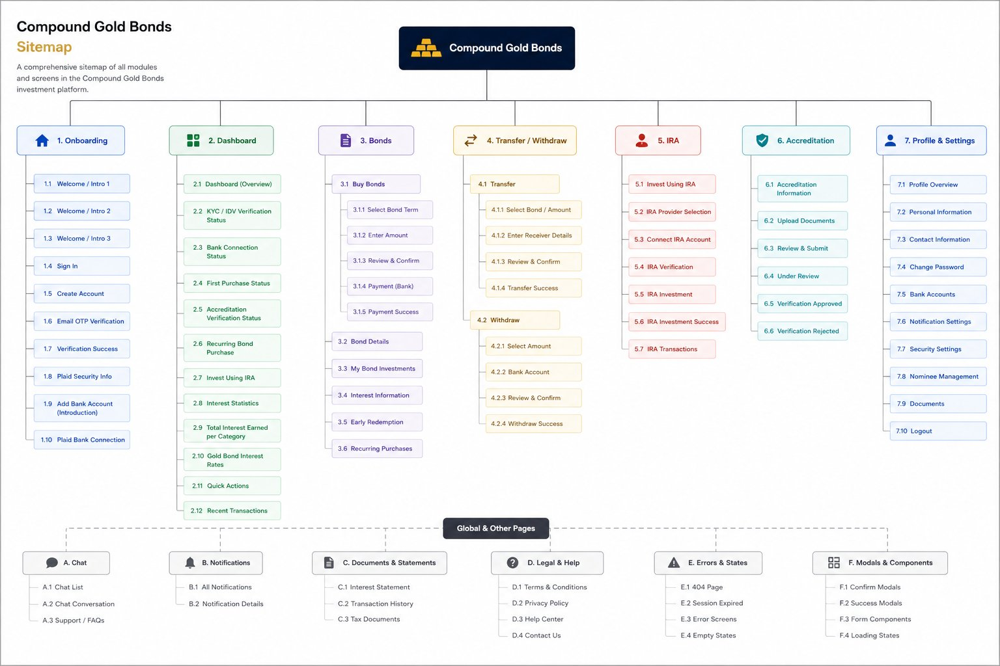
Then the end-to-end flow. CGB's journey is deliberately heavier than CREB's, and it has to be: landing → sign in or create account → email OTP → KYC and bank connection → accreditation, and only then into the dashboard. Every one of those gates is a place trust can break, so each was designed to feel like reassurance, not bureaucracy.
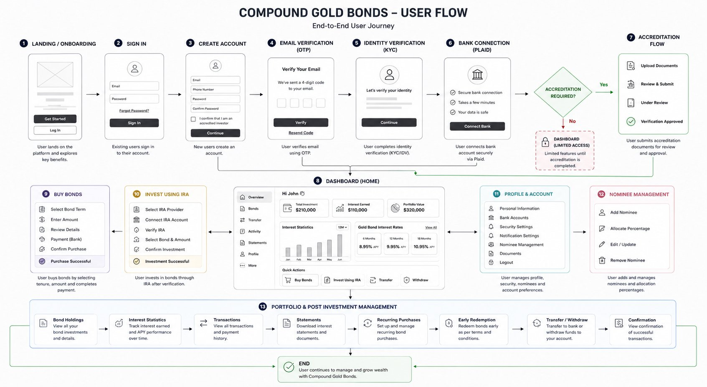
Walking the journey, low fidelity to high
I wireframed the flow in low fidelity first - structure and order before style - then raised the fidelity once the skeleton held. Read in sequence, the screens are the clearest way to see the product. A user lands, signs in or creates an account, and verifies by OTP. They clear KYC and connect a bank, then accreditation, the gate unique to this audience. Past it, the dashboard becomes the hub: holdings, interest statistics, and gold-bond rates at a glance.
From there the paths fan out. Buy Bonds - pick a term, enter an amount above the $10k minimum, review, and pay from a connected bank. Invest using an IRA - a separate verified track for tax-advantaged investing. Profile and nominees - assigning who inherits the bonds and at what allocation, a detail that matters at this level of commitment. Underneath sits portfolio management: statistics, transactions, statements, and transfer or withdraw, each built to show the math before anything is committed.

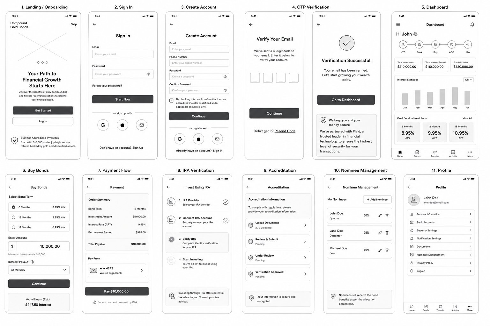
The finished screens, in colour
The wireframes became this. Read in colour, the screens are the clearest proof of the thesis: premium through restraint, and trust earned at every gate. A few moments from the journey.
Earning trust before a cent moves. CGB's onboarding is heavier than a consumer app's by necessity, with bank connection, identity, and accreditation all up front. Rather than hide that weight, the screens explain it: Plaid is introduced with a plain-language rationale before it is ever invoked, and accreditation offers four clear routes to qualify. Every step states exactly what it needs and why.
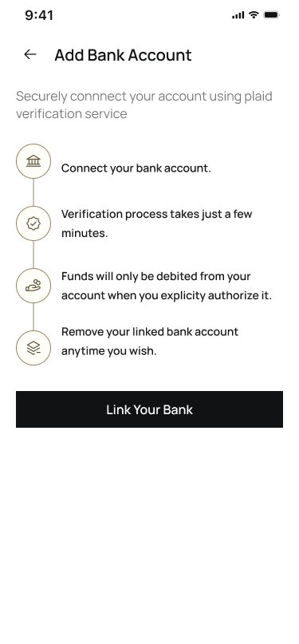
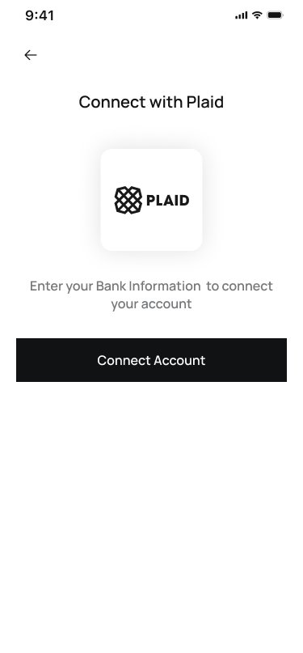
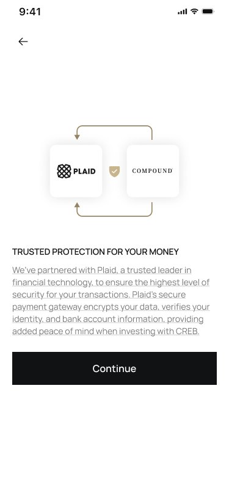
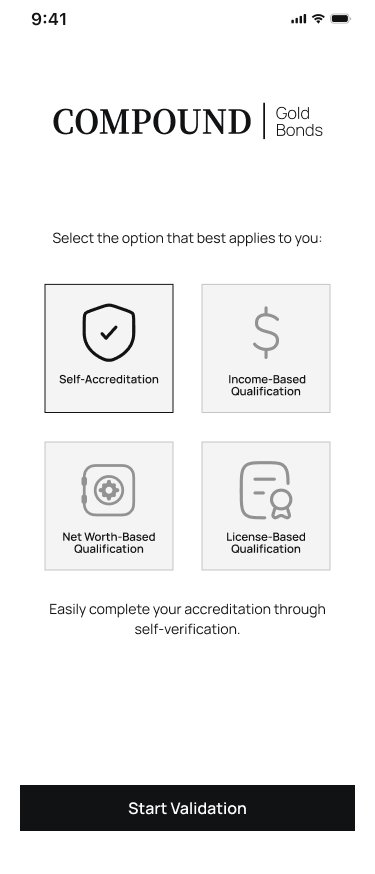
The hub. Past the gates, the dashboard carries everything at a glance: verification progress, total holdings, interest statistics, a rate-card breakdown, and recent activity with honest states - processed, pending, cancelled. Dense, but ordered. What you own and what it earns come first.

Investing, made legible. Whether buying a bond outright or setting up a recurring plan, the numbers stay on screen: amount at maturity, interest, rate, and total to pay update live, and a confirmation step restates the full commitment before anything is final. The calculator lets someone model a recurring plan before committing to one.
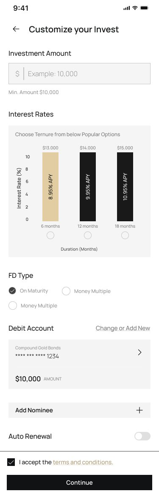

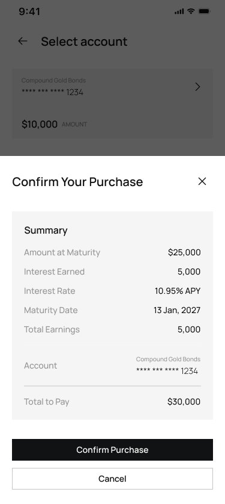

Holding and exiting, without surprises. Deposits are listed with early-redemption built in, and breaking one early shows the penalty and the exact interest given up before the user confirms - the same see-the-math-first principle that defined CREB's withdraw flow, carried into a higher-stakes product.
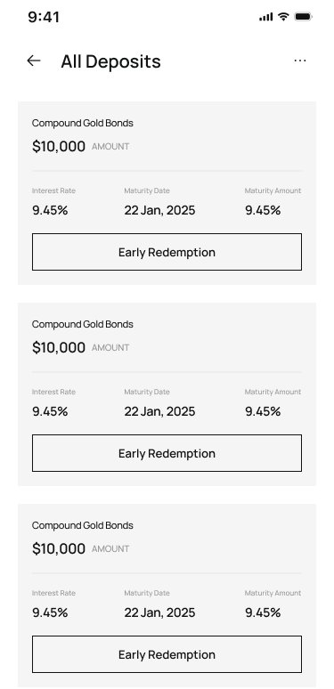
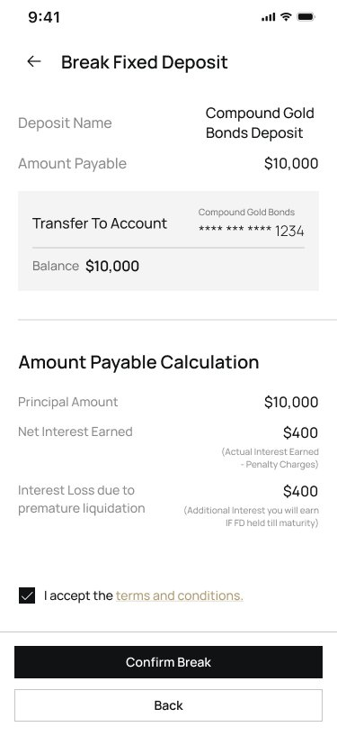
Designing for a different kind of confidence
CREB taught me to earn trust in small moments. CGB taught me that trust also lives in restraint and polish - that for a higher-stakes audience, calm and exactness are the value proposition. Designing it sharpened how I think about tone, density, and what "premium" actually means in an interface. It isn't decoration. It's care made visible, on every screen where someone decides to commit real money.